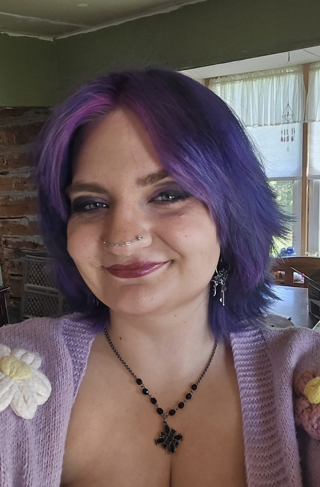

Software Engineering Student | Metropolitan State University
Hi, I’m Lauren Linkert, a Software Engineering student at Metropolitan State University with interests in software development, cybersecurity, and intelligence analysis. I enjoy learning new technologies and working on projects that challenge me to think critically and solve problems creatively. Some of my favorite experiences so far have involved combining technical work with research, communication, and analytical thinking. As I continue through my program, I hope to keep building my skills and exploring different areas within the tech field.
| Course | Description |
|---|---|
| Data Structures | Studied algorithms, recursion, and efficient problem-solving techniques |
| Software Engineering | Learned software development processes, project organization, and collaboration |
| Database Systems | Worked with SQL, relational databases, and data management concepts |
| Linear Algebra | Applied mathematical concepts related to vectors, matrices, and transformations |
| Discrete Mathematics | Explored logic, proofs, and computational problem-solving |
| Computer Architecture | Studied computer hardware, memory, and low-level system operations |
Developed an intelligence briefing focused on emerging cyber and satellite-related threats to U.S. space infrastructure. The project involved researching current threats, organizing intelligence findings, and presenting key judgments and recommendations in a professional briefing format.
Technologies/Skills Used: Research, Presentation Design, Analytical Writing, AI-Assisted Research
Created a custom Bash shell utility designed to safely replace the traditional rm command by moving deleted files into a recovery directory instead of permanently deleting them. This project strengthened my experience with shell scripting, file handling, and command-line tools.
Technologies Used: Bash, Linux Command Line, Shell Scripting